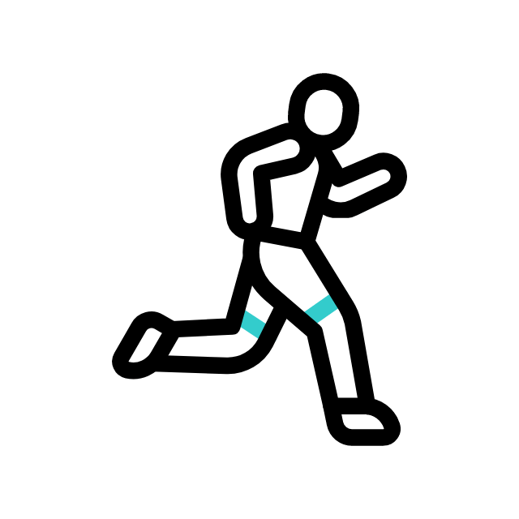

The Tools For your Goals
Trying to lose weight, tone up, lower your BMI, or invest in your overall health? We give you the right features to get there.

Learn. Track. Improve
Keeping a food diary helps you understand your habits and increases your likelihood of hitting your goals.

Stay Motivated.
Join the World’s Largest Fitness Community for advice, tips, and support 24/7.
Logging Simplified.
Scan barcodes, save meals and recipes, and use Quick Tools for fast and easy food tracking.